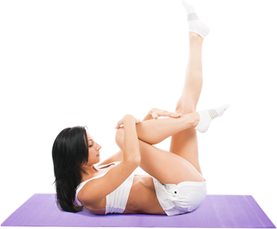

Все о пилатесе – лучшие материалы Интернета в одном разделе
Упражнения для живота от Джозефа Пилатеса

Что такое пилатес упражнения и чем они полезны?
Система пилатес: когда и на какие результаты мне рассчитывать?
Пилатес отзывы и ответы на часто задаваемые вопросы
Гимнастика Пилатес. Принципы без которых ничего не получиться